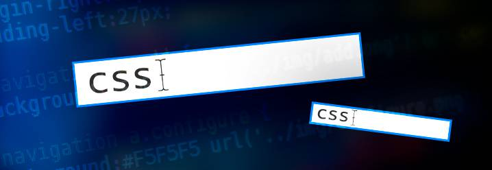

Tanto si quieres crear páginas web directamente en HTML, como si usas una plataforma de gestión de contenidos como WordPress o Blogger, si quieres manipular el diseño de tu web, necesitarás usar las hojas de estilo en cascada CSS (siglas en inglés de Cascading Stylesheets).
En el caso de crear páginas web directamente en HTML, la necesidad de usar hojas CSS es obvia. Aquí es simplemente una necesidad y no hay más que hablar.
Pero la gracia de la cuestión está en las plataformas de blogs como Joomla, WordPress o Blogger que son las herramientas que todo el mundo usa hoy en día.
Aquí, para ponerle las cosas más fáciles al usuario, se ha intentado siempre evitar el uso de HTML y CSS. Y eso es bueno el 80% del tiempo, pero hay un 20% de ocasiones donde no saber un poquito de HTML y CSS te limitará severamente.